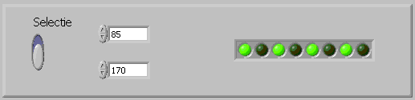
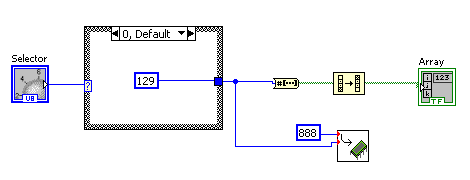

Tipuri de structuri decizionale
Pentru a dezvolta aplicatii mai complexe avem nevoie de structuri care sa iplementeze instructiunile decizionale.
Sunt implementate doua structuri decizionale:
- Selectorul
- Structura "Case"
Selectorul
Se gaseste in grupul Programming-->Comparison-->Select
Aplicatii;e in care la un moment dat trebuie sa se ia o decizie sunt usor de realizat utilizand structura "Select"
Structura select simpla
Structura "select" seste similara instructiunii "if" din c++. Este folosita pentru a implementa cazurile in care aplicatia
trebuie sa parcurga una din doua ramuri in functie de o conditie de intrare. Prin intermediul structurii select simpla se poate lua deci o decizie atunci
cand avem doua alternative.
Sa presupunem ca dispunem de valoarea temperaturii mediului ambiant si vrem sa afisam intr-un control de tip text,
starea de agregare in care se afla apa, dica daca temperatura este sub zero apa se gaseste sub forma de ghiata altfel se afla in stare lichida.
Vom realiza aplicatia numita if_v0_v0
Pentru a lua decizia in legatura cu textul care trebuie afisat in functie de temperatura se utilizeaza deci
structura "Select".
Dupa cum se observa, structura select returneaza una din cele doua intrari in functie de valoarea booleana aplicata
la intrare. Valoarea booleana este rezultatul unei expresii booleene, in cazul de fata: Temperatura>=0
Sa realizam acum o aplicatie if_v0_v1 in care avem doua controale numerice A,B si vrem sa afisam intr-un al treilea control control
numeric, numarul cel mai mare furnizat de controale numerice A si B.
Diagrama bloc are forma:
Sa folosim acum structura select pentru a ordona doua numere introduse de la doua controale numerice dealizand o aplicatie
de forma if_v0_v2
Se vor folosi doua structuri select. Prima structura selecteaza minimul si il afiseaza pe primul indicator numeric
iar cea de-a doua structura select, selecteaza maximul si-l afiseaza in ce-l de-al doilea indiicator numeric.
Revenim la aplicatiile care afiseaza un numar intreg de tipul U8 sub forma binara utilizand 8 leduri si sa
realizam aplicatia if_v0_v3 , care afiseaza una din doua valori prestabilite in functie de pozitia unui
comutator.

Una din cele doua valori furnizate de controalele numerice va fi afisata binar in functie de pozitia comutatorului.
Structura select imbricata
In cazul in care trebuie luata o decizie avand mai mult de doua alternative, se folosesc structuri select imbricate.
Sa presupunem ca in aplicatia if_v0_v0 vrem sa tratam si cazul in care temperatura creste peste 100 de grade si apa se
gaseste in forma gazoasa.
Vom modifica aplicatia if_v0_v0 realizand noua aplicatie numita if_v0_v4
In diagrama bloc va trebui sa utilizam doua structuri select.
Pemtru a trata deci cele trei posibilitati a fost nevoie de utilizarea a doua structura select, realizandu-se
imbricarea unei structuri select intr-o alta structura select.
Vom utiliza in continuare structurile select imbricate pentru a rezolva ecuatia de gradul I
if_v0_v5 a si b fiind coeficientii ecuatiei de gradul I
Vor trebui determinate cazurile:
1. a=0 sau b=0
2. a!=0 si b!=0
Fiecare din expresiile relationale de sus vor face selectia in doua structuri select
Pe baza aplicatiei anterioare vom rezolva aplicatia de gradul II
if_v0_v6 a, b si c fiind coeficientii ecuatiei de gradul II
In diagrama bloc se va include diagrama bloc ce rezolva ecuatia de gradul I si se vor adaga cazurile in functie de delta
Structura Case
Pentru cazurile in care in cadrul aplicatiei trebuie sa alegem din mai multe alternative, structura case este mult mai
usor de folosit decat utilizarea structurilor select imbricate. Structura "Case" poate alege din n variante.
Selectia se face in functie de o valoare de selectare furnizata la intrarea structurii "Case". Valoarea de selectare poate fi de tipul boolean numeric sau
alfanumeric.
Utilizarea structurii case cu valoare de selectie booleana
Structuria case cu valoare de selectie booleana este similara cu instructiunea "if" avand numai doua variante.
Aplicatia if_v0_v6.vi, folosind structuri case devine if_v1_v0.vi
Reluam aplicatia pentru rezolvarea ecuatiei de gradul I folosind de data aceasta structuri case.
if_v1_v1.vi
Utilizarea structurii case cu valoare de selectie numerica
Daca in aplicatiile de sus structura "Case" poate fi inlocuita de un simplu selector "if", pentru cazurile cand
avem mai multe variante de selectie utilizarea structurii "Case" este absolut necesara.
Utilizand structura "Case" vom realiza o aplicatie if_v1_v2.vi in care
avem doi operanzi furnizati de doua controale numerice A si B cu care efectuam diverse operatii selectate de la un alt control.
In figura de jos sunt reprezentate continutul structurilor "Case" pentru toate cazurile.
Vom utiliza in continuare structurile case pentru a afisa diverse combinatii de leduri aprinse selectate de la un
control numeric if_v1_v3
Pe fiecare varianta a structurii "Case" se pun constantele dorite a fi afisate pe leduri

Utilizarea structurii case cu valoare de selectie alfanumerica
Structurile "Case" utilizate pana in prezent aveau valoarea pentru selectie de tip boolean sau numeric.
Structurile "Case" accepta la intrare si valori de selectie de tip alfanumeric. Sa reluam aplicatia si sa realizam
if_v1_v4.vi , aplicatie care calculeaza suma, diferenta, produsul sau impartirea a doi operanzi in
functie de selectia facuta de utilizator. Vom utiliza pentru selectie un control de tip "Radio Button" care are cele patru obtiuni.
Pentru diagrama bloc s-a folosit o structura "Case" cu patru variante selectate prin intrarea de selectie de tip
alfanumeric. Structura "Case" accepta fara nici un fel de setare intrare de selectie booleana, numerica sau alfanumerica.

In diagrama bloc de sus este prezentata numai varianta pentru impartire, restul fiind similare cu diferenta ca
se alege alt operator.